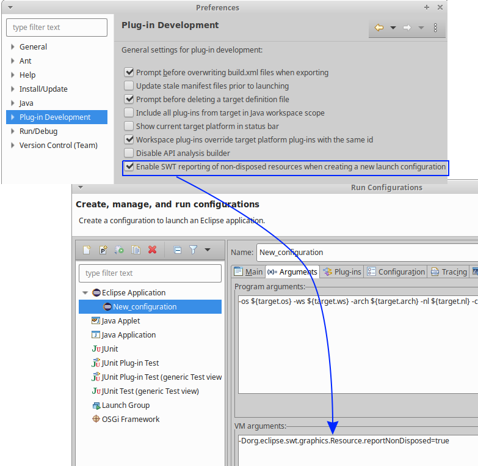
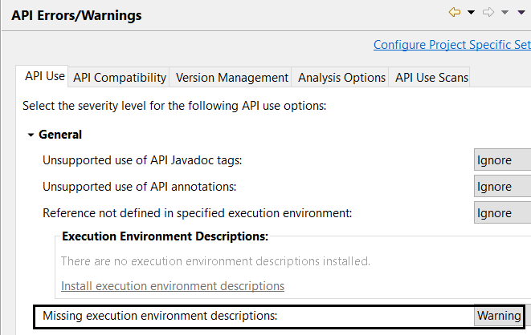
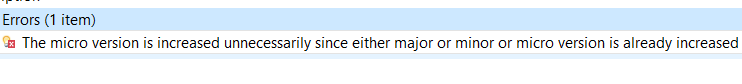
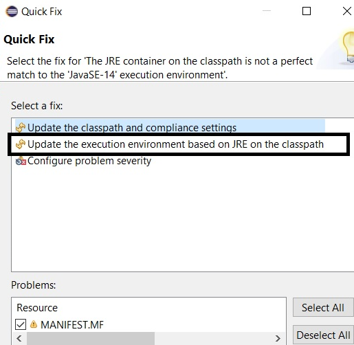

Here are descriptions of some of the more interesting or significant changes made to the Plug-in Development Environment (PDE) for the 4.20 release of Eclipse. They are grouped into:
Dialogs, Wizards and Views |
|
| Preference option enabling non-disposed SWT Resources error handling |
The preference option Enable SWT reporting of non-disposed resources when creating a new launch configuration
has been added to Plug-in Development preference page to enable adding  |
API Tools |
|
| Preference option for "Missing EE descriptions" removed |
The preference option Missing execution environment descriptions option in
Plug-in Development > API Errors/Warning preference page is now removed. The functionality
to report such errors/warning and their quick-fixes are also removed.
 |
| Report multiple increase of the service segment or minor version |
API tools now reports if the service or the minor version is increased multiple times in a single release.
 |
PDE Compiler |
|
| The "not a perfect match" problem has a quick fix to change the BREE |
The "not a perfect match" problem has a quick fix to change the BREE.
 |